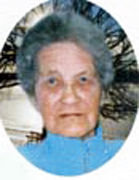

fiche familiale
*******************************************************************************
 |
Marie-Anne Rivest Rivet décède à l'âge de 78 ans. Naissance le 14 octobre 1892 à St-Alphonse-de-Rodriguez, cté Joliette Baptême le 16 octobre 1892 à St-Alphonse-de-Rodriguez Parrain Joseph Piquette, marraine Marie Gagnon, son oncle et sa tante. Décès le 9 octobre 1971 à l'hôpital Youville de Noranda Funérailles: 12 octobre 1971 à St-Isidore de Laverlochère Sépulture au cimetière de Laverlochère. Marraine de Marie-Anna Rivest fille d'Émery, d'Hector Lambert, de Laurence Rivest et de Raymond Rivest. Père: Urgel Rivet Rivest Mère: Agnès Piquette Piquet (sa famille) |
Mariage le 26 juillet 1909 à St-Isidore de Laverlochère
leur mariage fût le 1er célébré à Laverlochère
par l'abbé Joseph Laroque, 1er curé de la paroisse.
leur mariage fût le 1er célébré à Laverlochère
par l'abbé Joseph Laroque, 1er curé de la paroisse.
 |
Époux: Pierre Lambert décède à l'âge de 72 ans. Naissance le 21 juillet 1887 à Ste-Ursule, cté Maskinongé Baptême le 21 juillet 1887 à Ste-Ursule. Baptisé Joseph, Louis, Pierre. Parrain son oncle Pierre Lambert, marraine Azélie Lambert (Grenier). Décès le 25 février 1960 à Laverlochère, cté Témiscamingue Funérailles: 27 février 1960 à St-Isidore de Laverlochère Sépulture: au cimetière de Laverlochère Cultivateur, arrivée au Témiscamingue en 1905. Parrain de Marie-Anna Rivest fille d'Émery, d'Hector Lambert, de Laurence Rivest et de Raymond Rivest. Père: Ludger-Léger Lambert Mère: Célina Bergeron (sa famille) |
Enfant 1 Lucienne Lambert
décède à l'âge de 75 ans.
Naissance: 15 mai 1910 à Laverlochère
Parrain Urgel Rivet, marraine Agnès Piquette ses grand-parents.
Décès: 28 août 1985 à Lorrainville
Marraine de sa soeur Agnès et d'Estelle Lambert.
Mariage le 17 juin 1931 à St-Isidore de Laverlochère
Conjoint: Lucien McFadden
décède à l'âge de 83 ans.
Naissance: 27 février 1906 à Lorrainville
Décès: 16 avril 1988 à Lorrainville
Père: Hormidas McFadden
Mère: Célina Dubois
Enfant 1 Maurice McFadden
décède à l'âge de 77 ans
Conjointe: Léona Dorion
Enfant 2 Carmen McFadden
décède à l'âge de 76 ans
Conjoint: Jacques Falardeau
décède à l'âge de 64 ans
Enfant 3 Laurette McFadden
Conjoint: Jacques Pilotte
Enfant 4 Simon-Roger McFadden
décède à l'âge de 71 ans
Conjointe: Fleurette-Magella Rocheleau
Enfant 5 Aline McFadden
Conjoint: Jerry Hall
Enfant 6 Huguette McFadden
Conjoint: Nil Lacasse
Enfant 7 Vital McFadden
Conjointe: Marielle Bois
Enfant 8 Roger McFadden
Conjointe: Huguette Blain
Enfant 9 Idèle McFadden
Conjoint: Michel Comtois
Enfant 10 Jeanne McFadden
Conjoint: Luc King
Enfant 11 Yvon McFadden
Conjointe: Michèle Giroux
Enfant 12 Gilles McFadden
Conjointe: Louise Boulay
Enfant 13 Françoise McFadden
Conjoint: Robert Uson
Enfant 14 Hélène McFadden
Conjoint: Pascal Gaudet
décède à l'âge de 23 ans
Conjoint: Gilles Casselot
Enfant 15 Jean-Guy McFadden
Conjointe: Francine Couture
-------------------------------------------------------------------------------
 
|
Enfant 2 Florence Lambert décède à l'âge de 82 ans. Naissance: 23 février 1912 à Laverlochère Parrain Onésime Bournival, marraine Azilda Lambert, son oncle et sa tante. Décès: 22 mai 1994 à Lorrainville Marraine de son frère Rémi. Mariage le 3 avril 1929 à St-Isidore de Laverlochère Conjoint: Gérard Baril décède à l'âge de 93 ans. Naissance: 16 décembre 1906 Décès:9 octobre 2000 à Lorrainville Funérailles: 12 octobre 2000 à Notre-Dame-de-Lourdes de Lorrainville Sépulture: au Cimetière de Lorrainville Père: Ovila Baril Mère: Marie Plante |
Conjointe: Thérèse Trudel
Enfant 2 Rémi Baril
Conjointe: Jeannine Larose
décède à l'âge de 80 ans.
Enfant 3 Eugène Baril
décède à l'âge de 87 ans.
Conjointe: Thérèse Larose
décède à l'âge de 68 ans.
Conjointe: Rita Larivière
décède à l'âge de 70 ans.
Enfant 4 Gilbert Baril
Conjointe: Fleurette Barrette
Enfant 5 Jeannine Baril
Enfant 6 Antonio Baril
Conjointe: Thérèse Trudel
Enfant 7 Lya Baril
Conjoint: Robert Guimond
décède à l'âge de 68 ans.
Conjoint: Louis Gingras
Enfant 8 Estelle Baril
Conjoint: Marc-Marcel Julien
Enfant 9 Rachel Baril
décède à l'âge de 33 ans
Enfant 10 Fleurette Baril
décède à l'âge de 46 ans
Conjoint: Yvon Payette
-------------------------------------------------------------------------------
  |
Enfant 3 Adrien Lambert décède à l'âge de 87 ans. Naissance: 19 avril 1913 à Laverlochère Parrain son oncle Omer Lambert, marraine sa tante Blanche Rivest. Décès: 15 février 2001 à Laverlochère Funérailles: 18 févier 2001 à St-Isidore de Laverlochère Sépulture: au cimetière de Laverlochère Parrain de sa soeur Agnès et de Rosaire Lambert. Mariage le 21 août 1935 à Notre-Dame-de-Lourdes de Lorrainville Conjointe: Marie-Anna McFadden décède à l'âge de 90 ans. Naissance: 9 mai 1911 à Lorrainville Baptême: 10 mai 1911 à Notre-Dame-de-Lourdes de Lorrainville Décès: 25 janvier 2002 à Ville-Marie Funérailles: 28 janvier 2002 à Notre-Dame-de-Lourdes de Lorrainville Sépulture: au Cimetière de Laverlochère Père: Hormidas McFadden Mère: Célina Dubois |
décède à l'âge de 66 ans
Conjointe: Auréla Brousseau
décède à l'âge de 65 ans
Conjointe: Marie-Ange Cloutier
Enfant 2 Réjeanne Lambert
Conjoint: Jean-Claude Brousseau
Enfant 3 Céline Lambert
Conjoint: Conrad Dubois
décède à l'âge de 55 ans
Enfant 4 Fleure-Ange Lambert
Conjoint: Aurèle Perreault
Enfant 5 Jocelyn Lambert
-------------------------------------------------------------------------------
 
|
Enfant 4 Eddy Lambert décède à l'âge de 92 ans Naissance: 10 septembre 1914 à Laverlochère Parrain Donat Bougie, marraine Léontine Lambert, son oncle et sa tante. Décès: 5 mars 2007 au Centre de santé Ste-Famille de Ville-Marie Funérailles: 10 mars 2007 à Notre-Dame-du-Rosaire de Ville-Marie Sépulture: au cimetière de Ville-Marie Parrain de sa soeur Cécile et de son frère Charles et de Roland Lambert. Mariage le 16 jullet 1938 à St-Placide de Béarn Conjointe: Marguerite Drolet Naissance: 10 novembre 1915 Décès: 26 novembre 2008 à Ville-Marie Funérailles: 29 novembre 2008 à Notre-Dame-du-Rosaire de Ville-Marie Père: Ovila Drolet Mère: Octavie Trudel |
décède à l'âge de 76 ans.
Conjoint: Jacques Brassard
décède à l'âge de 82 ans.
Enfant 2 Cécile Lambert
Enfant 3 Ovide Lambert
Conjointe: Denise Bellemare
Enfant 4 Lucille Lambert
Conjoint: Fernand Breault
Enfant 5 Henri Lambert
Conjointe: Raymonde Fleury
Enfant 6 Fernand Lambert
Conjointe: Michelle Lalande
-------------------------------------------------------------------------------
 
|
Enfant 5 Lionel Lambert décède à l'âge de 86 ans. Naissance: 10 mars 1916 à Laverlochère Parrain Armand Rivest, marraine Ida Brouillard, son oncle et sa tante. Décès: 4 janvier 2003 à Ville-Marie Funérailles: 6 janvier 2003 à St-Isidore de Laverlochère Sépulture: au cimetière de Laverlochère Mariage le 3 février 1943 à Notre-Dame-de-Lourdes de Lorrainville Conjointe: Germaine Lessard décède à l'âge de 94 ans. Naissance: 1er juillet 1916 à Fabre Décès: 16 avril 2011 à Belleterre Funérailles: 20 avril 2011 à St-André de Belleterre Sépulture: au cimetière de Belleterre Père: Rodolphe Lessard Mère: Anaïs Plourde |
Décède à l'âge de 67 ans
-------------------------------------------------------------------------------
 
|
Enfant 6 Laurette Lambert décède à l'âge de 102 ans. Naissance: 5 décembre 1917 à Laverlochère Parrain son oncle Donatien Rivest, marraine sa tante Marie-Rose Rivest. Marraine de sa soeur Cécile et de son frère Charles. Décès: 20 janvier 2020 à la Résidence Marguerite D'Youville de Ville-Marie Mariage le 26 juin 1940 à St-Isidore de Laverlochère Conjoint: Raoül Neveu décède à l'âge de 84 ans. Naissance: 9 février 1916 à Laverlochère Décès: 17 novembre 2000 à Laverlochère Funérailles: 20 novembre 2000 à St-Isidore de Laverlochère Sépulture: au Cimetière de Laverlochère Père: Wilfrid Neveu Mère: Amanda Jolette |
Conjoint: François Bastien
Enfant 2 Jeanne-D'Arc Neveu
décède à l'âge de 61 ans
Enfant 3 Lorraine Neveu
Conjoint: Jean-Pierre Riopel
Conjoint: Pierre Sénéchal
Enfant 4 Jean-Charles Neveu
Conjointe: Huguette Barrette
Conjointe: Suzie Brouillard
-------------------------------------------------------------------------------
 
|
Enfant 7 Marcel Lambert décède à l'âge de 94 ans. Naissance: 16 mars 1919 à Laverlochère Parrain Arthur Lambert, marraine Clara Bellemare, son oncle et sa tante. Décès: 17 décembre 2013 à la Résidence D'Youville de Ville-Marie Funérailles: 20 décembre 2013 à St-Isidore de Laverlochère Sépulture: au cimetière de Laverlochère Mariage le 24 juin 1944 à St-Eugène-de-Guigues. Conjointe: Edouilda Falardeau décède à l'âge de 83 ans. Naissance: 25 décembre 1923 Décès: 4 décembre 2007 au Centre de santé Ste-Famille de Ville-Marie Funérailles: 8 décembre 2007 à St-Isidore de Laverlochère Sépulture: au cimetière de Laverlochère Père: Joseph-Edouard Falardeau Mère: Joséphine Pilon |
Conjoint: Michel Drolet
Enfant 2 Jacques Lambert
décède à l'âge de 1 an.
Enfant 3 Précylle Lambert
Conjoint: Lucien Gervais
Conjoint: Claude Daoust
Enfant 4 Jacques Lambert
Conjointe: Jacinthe Barrette
Enfant 5 Lucie Lambert
Enfant 6 Yvan Lambert
décède à la naissance.
Enfant 7 Yvon Lambert
décède à la naissance.
-------------------------------------------------------------------------------
 
|
Enfant 8 Aurèle Lambert décède à l'âge de 93 ans. Naissance: 23 août 1920 à Laverlochère Parrain Albert Labelle, marraine Marguerite Rivest, son oncle et sa tante. Parrain d'Aurèle Rivest. Décès: 18 août 2014 au Centre de santé Ste-Famille de Ville-Marie Funérailles: 21 août 2014 à St-Isidore de Laverlochère Sépulture: au cimetière de Laverlochère Mariage le 4 avril 1945 à St-Eugène-de-Guigues. Conjointe: Juliette Falardeau décède à l'âge de 77 ans. Naissance: 29 novembre 1925. Décès: 16 août 2003 à Ville-Marie Funérailles: 19 août 2003 à St-Isidore de Laverlochère Sépulture: au cimetière de Laverlochère Père: Joseph-Edouard Falardeau Mère: Joséphine Pilon |
Conjoint: André Dubois
Enfant 2 Pascal Lambert
Conjointe: Diane Julien
Enfant 3 Laurier Lambert
Conjointe: Josiane Spring
Enfant 4 Sylvie Lambert
Conjoint: Pierre Sauvé
Enfant 5 Étienne Lambert
décède à l'âge de 32 ans
-------------------------------------------------------------------------------
 
|
Enfant 9 Lucie Lambert décède à l'âge de 89 ans. Naissance: 6 mai 1922 à Laverlochère Parrain Lionel Rivest, marraine Alice Barriault, son oncle et sa tante. Décès: 27 décembre 2011 à St-Jean-de-Matha, cté Joliette Mariage le 26 juillet 1944 à St-Isidore de Laverlochère Conjoint: Rolland Gingras décède à l'âge de 87 ans. Naissance: en 1925 Décès: en 2012 à St-Jean-de-Matha, cté Joliette Père: Odilon Gingras Mère: Odélie Veer |
Conjointe: Diane Vézina
Enfant 2 Mario Gingras
Conjointe: Manon Michaud
Enfant 3 Pascal Gingras
Conjointe: Julienne Brunet
Enfant 4 Robert Gingras
Conjointe: Lucie Côté
Enfant 5 Fleurette Gingras
Conjoint: Marcel Perrier
Enfant 6 Jacinthe Gingras
Conjoint: Luc Longtin
Enfant 7 Marcelle Gingras
Conjoint: Yvon-Michel Gaudet
-------------------------------------------------------------------------------

|
Enfant 10 Agnès Lambert décède à l'âge de 65 ans. Naissance: 2 juin 1925 à Laverlochère Baptême: 2 juin 1925 à St-Isidore de Laverlochère Baptisée Marie, Agnès. Parrain son frère Adrien, marraine sa soeur Lucienne. Décès: 27 avril 1991 à l'hôpital Ste-Famille de Ville-Marie Funérailles: 30 avril 1991 à St-Antoine-Abbé de Latulipe Sépulture: au cimetière de Latulipe Mariage le 26 juillet 1944 à St-Isidore de Laverlochère Conjoint: Léopold Gingras décède à l'âge de 71 ans. Naissance: 16 septembre 1924 à Latulipe Baptême: 18 septembre 1924 à Notre-Dame-du-Mont-Carmel de Fugèreville Baptisé Joseph, Léopold, Raymond. Parrain Raymond Gingras, marraine Eugénie Alaire. Décès: 30 septembre 1995 à Latulipe Funérailles: à St-Antoine-Abbé de Latulipe Sépulture: au cimetière de Latulipe Père: Odilon Gingras Mère: Odélie Veer |
Conjoint: Clément Larochelle
Enfant 2 Réginald Gingras
décède à l'âge de 56 ans
Conjointe: Etiennette Gauthier
Enfant 3 Odilon Gingras
décède à l'âge de 1 mois
Enfant 4 Diane Gingras
Conjoint: Roger Coté
Enfant 5 Jacqueline Gingras
Conjoint: Richard Gingras
Enfant 6 Lya Gingras
Conjoint: Guy Vallières
Enfant 7 France Gingras
Conjoint: Bertrand Morneau
Enfant 8 Luce Gingras
Conjoint: Carmel Pichette
Enfant 9 Johanne Gingras
Conjoint: Sylvain Blais
Enfant 10 Maryan Gingras
Conjoint: Pierre Laurier
Enfant 11 Jean-Pierre Gingras
Conjointe: Madeleine Gingras
-------------------------------------------------------------------------------
 |
Enfant 11 Léonide Lambert décède à l'âge de 64 ans. Naissance: 26 septembre 1926 à Laverlochère Parrain Emery Rivest, marraine Louisée Dénommée. Décès: 8 juillet 1991 à Kearns, ON Sépulture: au cimetière de Laverlochère Mariage le 9 juillet 1951 à Notre-Dame-de-Lourdes de Lorrainville Conjointe: Armande Baril Père: Armand Baril Mère: Alvina Richard |
Conjoint: Gary Bishop
Enfant 2 Pierre Lambert
Enfant 3 Raymond Lambert
Enfant 4 Madeleine Lambert
Enfant 5 Luc Lambert
Enfant 6 Guy Lambert
Enfant 7 Luc Lambert
Enfant 8 Claudette Lambert
Enfant 9 Claude Lambert
Enfant 10 Alex Lambert
Enfant 11 France Lambert
Enfant 12 Précillia Lambert
Enfant 13 Mylaine Lambert
-------------------------------------------------------------------------------
 
|
Enfant 12 Rémi Lambert décède à l'âge de 81 ans. Naissance: 8 juin 1928 à Laverlochère Parrain son cousin Sylvio Bournival, marraine sa soeur Florence. Décès: 29 août 2009 à Salaberry-de-Valleyfield Mariage le 14 septembre 1949 à Notre-Dame-de-Lourdes de Lorrainville Conjointe: Simone Meilleur décède à l'âge de 84 ans. Naissance: en 1930 Décès: 28 avril 2014 à Salaberry-de-Valleyfield Père: Samuel Meilleur Mère: Bernadette Brassard |
Conjointe: Nicole Fleury
Enfant 2 Ginette Lambert
Conjoint: Émile Gaignard
Enfant 3 Louise Lambert
Enfant 4 Denis Lambert
Conjointe: Francine Béland
Enfant 5 Mario Lambert
-------------------------------------------------------------------------------

|
Enfant 13 Lia Lambert Naissance: 7 avril 1930 à Laverlochère Parrain Henri Cormier, marraine Parmélia Lambert, son oncle et sa tante. Mariage le 2 juillet 1956 à St-Isidore de Laverlochère Conjoint: Gérald Falardeau décède à l'âge de 75 ans. Naissance: 18 août 1933 à St-Eugène-de-Guigues Baptême: 20 août 1933 à St-Eugène-de-Guigues Baptisé Joseph, Gérald, Claude. Parrain Charles Barrette, marraine Yvonne Falardeau. Décès: 21 mars 2009 à Fort-Lauderdale, FL, USA Funérailles: 28 avril 2009 à la Cathédrale St-Joseph de Rouyn-Noranda Sépulture: au cimetière Notre-Dame de Rouyn-Noranda Père: Siméon Falardeau Mère: Laura McFadden |
Conjointe: Linda Jefferson
Enfant 2 Serge Falardeau
Conjointe: Marielle Lemay
décède à l'âge de 58 ans.
Enfant 3 Julie Falardeau
Conjoint: René Lamothe
Conjoint: Bernard Côté
-------------------------------------------------------------------------------
Enfant 14 Cécile Lambert
décède à la naissance.
Naissance: 11 septembre 1931 à Laverlochère
Décès: 12 septembre 1931 à Laverlochère, cté Témiscamingue
Parrain son frère Eddy, marraine sa soeur Laurette.
-------------------------------------------------------------------------------

|
Enfant 15 Diane Lambert Naissance: 2 mars 1933 à Laverlochère Parrain Donatien Rivest, marraine Marie-Anna Ringuette, son oncle et sa tante. Mariage le 23 mai 1951 à St-Isidore de Laverlochère Conjoint: Eugène Rocheleau décède à l'âge de 85 ans. Naissance: en 1929. Décès: 24 décembre 2014 à Angliers, cté Témiscamingue Funérailles: 10 janvier 2015 à st-Viateur d'Anglers Sépulture: au cimetière d'Angliers Père: Louis Rocheleau Mère: Alida Pelletier |
Conjoint: Guy Therrien
Enfant 2 Marie-Claude Rocheleau
Enfant 3 Guy Rocheleau
Enfant 4 Michel Rocheleau
-------------------------------------------------------------------------------

|
Enfant 16 Charles Lambert décède à l'âge de 73 ans Naissance: 22 septembre 1934 à Laverlochère Parrain son frère Eddy, marraine sa soeur Laurette. Décès: 3 juin 2008 au Centre d'accueil Duhamel de Ville-Marie Funérailles: 9 juin 2008 à St-Isidore de Laverlochère Sépulture: au cimetière de Laverlochère Ordonné prêtre le 11 juin 1961 à Laverlochère par Mgr. Maxime Tessier. Il occupa les fonctions de secrétaire de l'évêché d'Haileybury, de professeur au petit séminaire de Rouyn, de secrétaire de l'évêché de Rouyn-Noranda et de curé de McWatters. Le 20 octobre 1962 il célébra le mariage de sa cousine Fleurette Rivest et d'Yvon Beaudoin. |